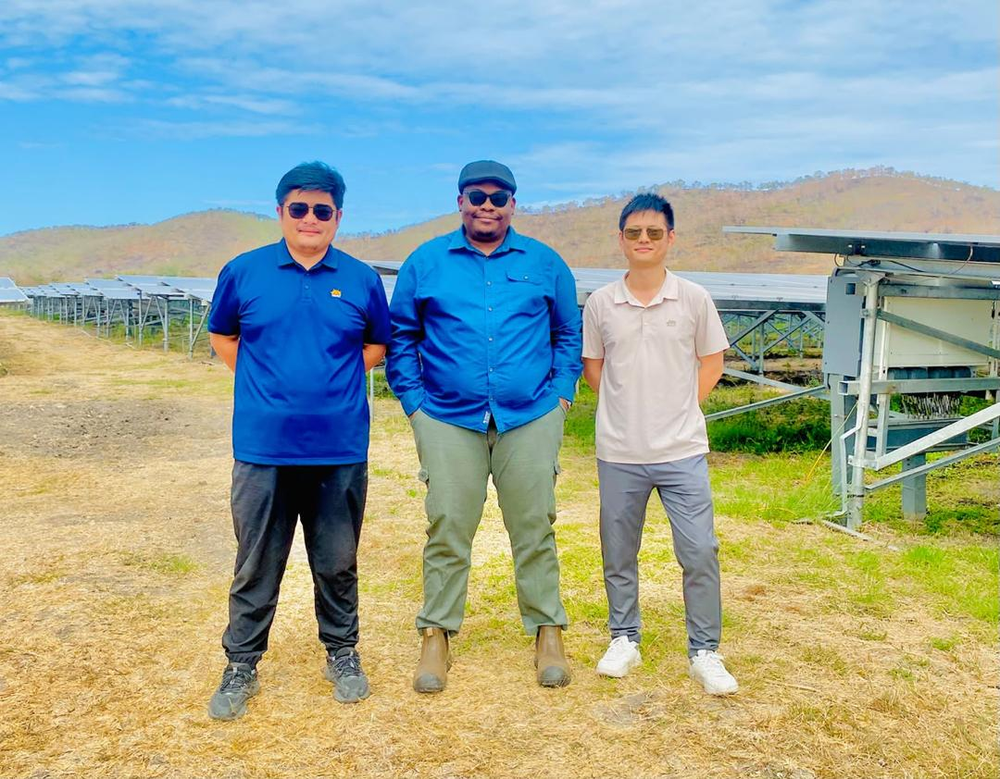
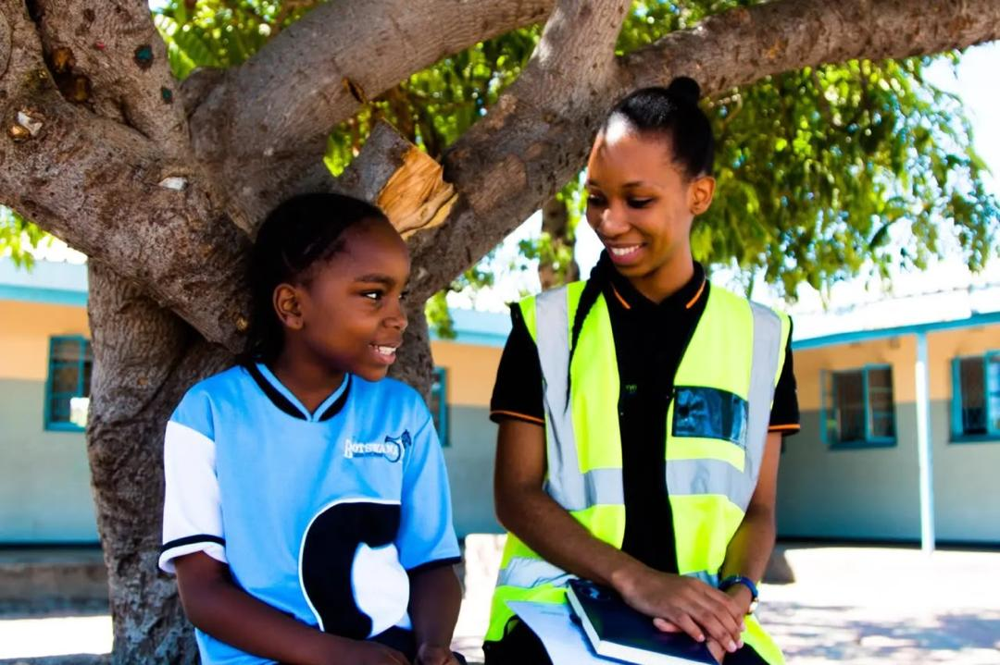
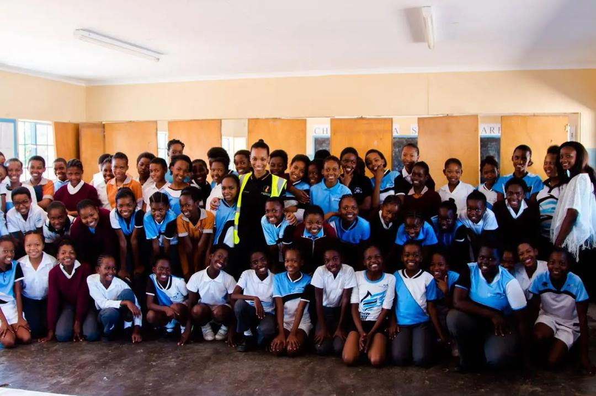
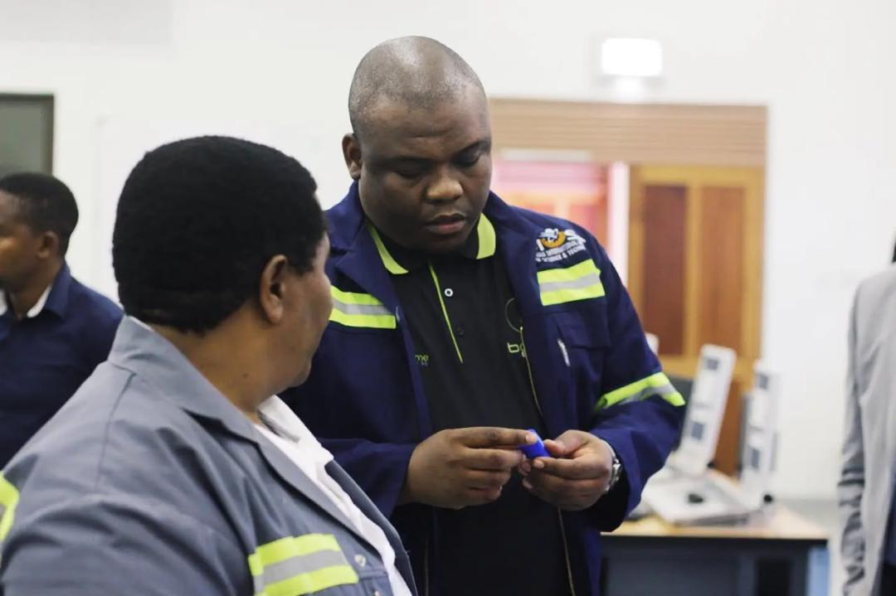
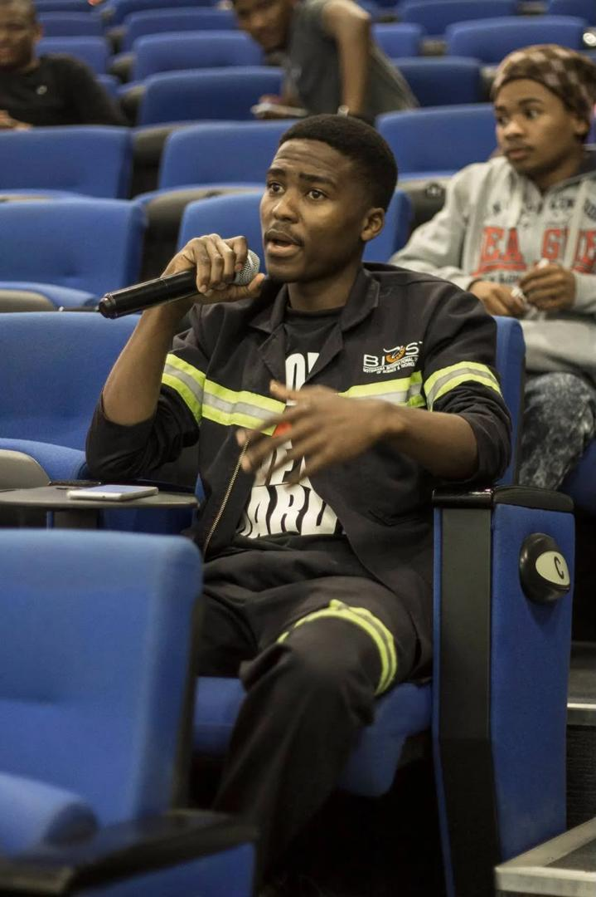

Independent Power Producers
Exploring potential engagement with power producers and project developers to understand generation capacity and supply options.
PULA WEALTH GROUP ENERGY DIVISION
Exploring energy development and power-supply opportunities that connect independent power producers, strategic partners and industrial demand across Southern Africa and the Democratic Republic of the Congo.
Discuss an Energy ProjectOUR ENERGY FOCUS
Reliable energy is an important foundation for industrial development, mining, manufacturing and broader economic activity.
Pula Wealth Group's energy focus centres on exploring connections between power producers, potential off-takers, project developers and strategic partners.
Each opportunity requires careful assessment of technical feasibility, commercial arrangements, regulatory requirements and the interests of the parties involved.
POWER SUPPLY OPPORTUNITY
Pula Wealth Group has identified a potential power-supply opportunity involving regional energy supply and industrial demand, including markets connected to Southern Africa and the DRC.
The group's supplied materials reference an opportunity exceeding 3,000 MW. The scope, available capacity, counterparties and commercial status should be confirmed before this figure is relied upon by prospective partners or investors.
Explore OpportunitiesPotential regional power-supply opportunity. Details subject to verification and due diligence.
PROJECT SPOTLIGHT
A look at a completed solar energy project in Papua New Guinea.
A completed 7 MW solar plant in Papua New Guinea.

Publications
PARTNERSHIPS & DEVELOPMENT
Energy projects depend on coordinated planning, commercially sound structures and collaboration between relevant stakeholders.
Exploring potential engagement with power producers and project developers to understand generation capacity and supply options.
Understanding the requirements of industrial and mining energy users, including demand and delivery arrangements.
Exploring arrangements such as power purchase agreements and regional wheeling, subject to applicable approvals and commercial feasibility.
Exploring solar energy projects and potential partnerships that support reliable, sustainable energy development.
COMMUNITY IMPACT
Pula Wealth Group supports primary schools by raising awareness of clean energy and educating young learners about its role in building a more sustainable future.
Through community engagement and education, we aim to help young learners understand the importance of clean energy in creating a more sustainable world.
Supporting primary schools and educating schools on clean energy.


RESEARCH & DEVELOPMENT
Our Chief Executive Officer's visit to Botswana International University of Science and Technology (BIUST) to explore opportunities in solar research and development.


Our Chief Executive Officer's visit to Botswana International University of Science and Technology on solar research and development.
FROM DISCUSSION TO DEVELOPMENT
Establish the project's objectives, power requirements, location and key stakeholders.
Review relevant technical, commercial and regulatory considerations with appropriate specialists and counterparties.
Identify possible areas of collaboration and discuss suitable structures with relevant parties.
ENERGY & INFRASTRUCTURE
Connect with Pula Wealth Group to begin a discussion about your energy requirements, development plans or potential partnership.
Start a Conversation